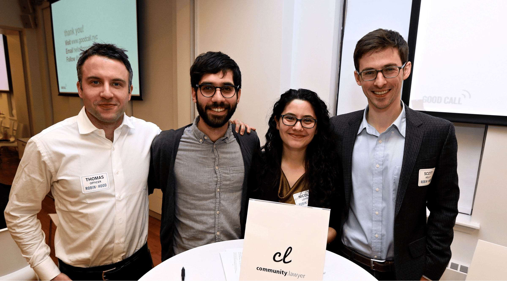
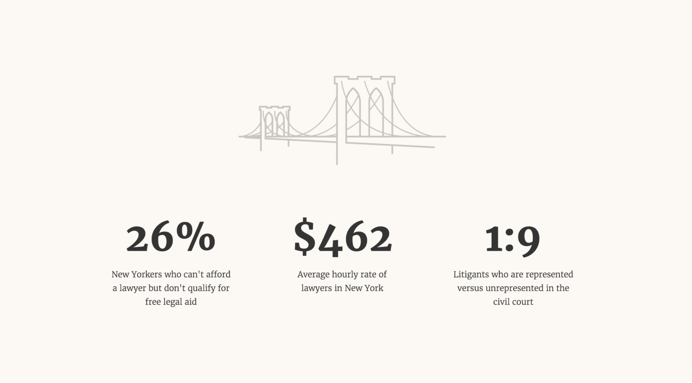
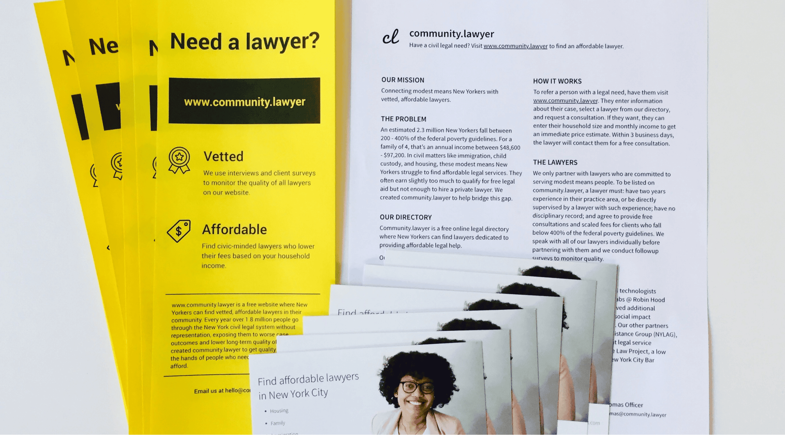
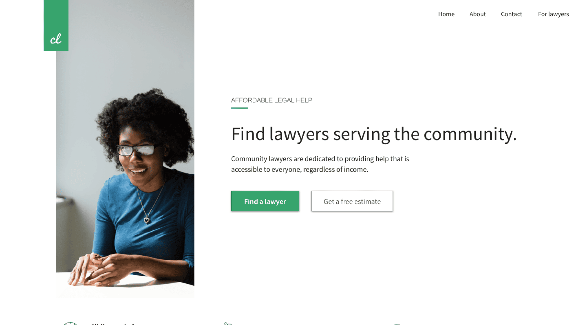
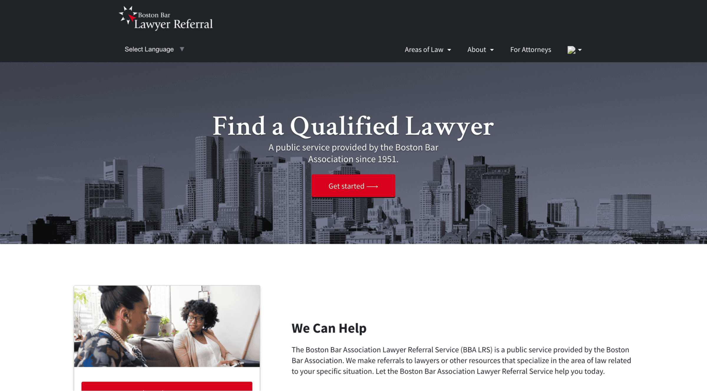
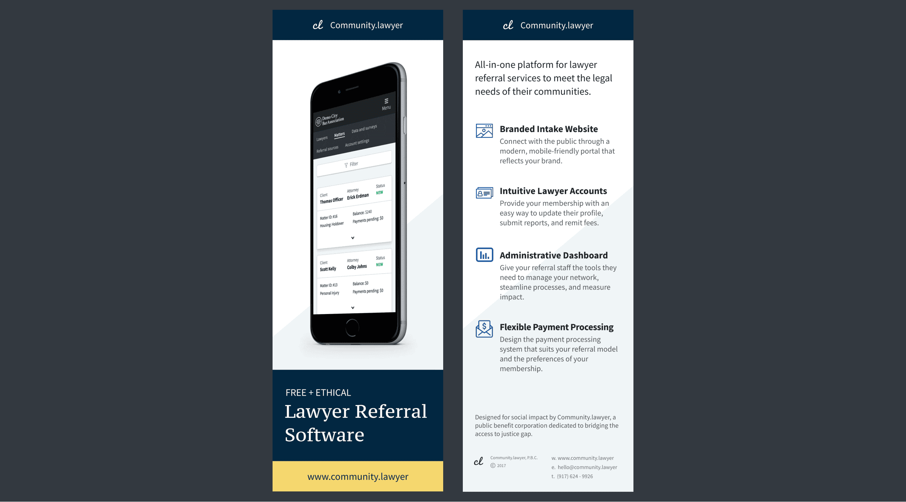
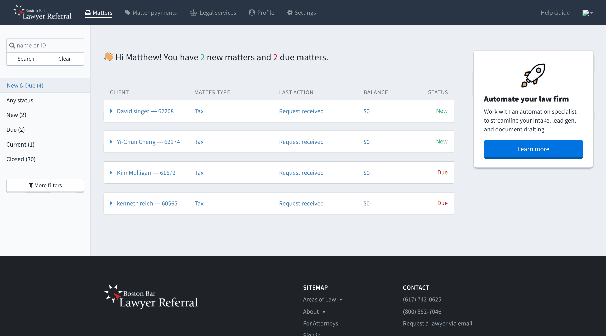
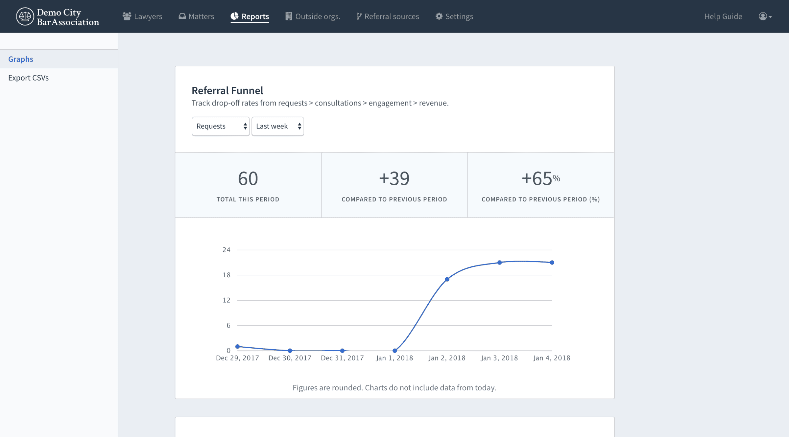

Blue Ridge Labs
Referral management for bar associations
Role
Team
Platforms
Overview
Blue Ridge Labs is a 5-month program to help entrepreneurs find cofounders, build prototypes, and raise money. In 2016, the target challenge was the justice gap: the staggering difference between the need for, and the availability of, affordable legal services. This is where I found my cofounders and built the first version of Community.lawyer.
Built a referral network still used by 20,000+ people monthly to find legal help.

community.lawyer team 2016
Goals
The Challenge
Think the world doesn't need another selfie app?
We agree.
BRL 2016 Promotional Website
I stumbled upon Blue Ridge Labs with only 24 hours remaining before their Fellowship deadline closed. What is it like to spend 5 months with talented strangers, surrounded by whiteboards, bashing your head against a problem? It was chaos. Beautiful, exciting, frustrating, and ultimately productive chaos.
My cofounders and I focused on the problem of finding an affordable lawyer once you've discovered that you're "over income" and therefore don't qualify for legal aid. We called it Community.lawyer.

problem statement

v1 marketing materials

homepage draft
The Pivot
Community.lawyer was a two-sided marketplace, with clients on one side and lawyers on the other. Where would we get our roster of lawyers? What hack could we exploit to get a large roster of vetted lawyers with as little effort as possible?
Our first pivot was moving away from trying to build our own roster of lawyers towards partnering with those organizations that already had them: bar associations.
Bar associations have lawyer referral services that traditionally operate by phone. Their online experience was outdated. We offered Community.lawyer as referral platform SaaS.

boston bar's community.lawyer website

v2 marketing materials

lawyer-facing backend

admin-facing backend
Impact
We grew very quickly to include as customers some of the largest bar associations in the country. Our network of referral platforms still exists today and is used by over 20,000 people every month to find legal help.